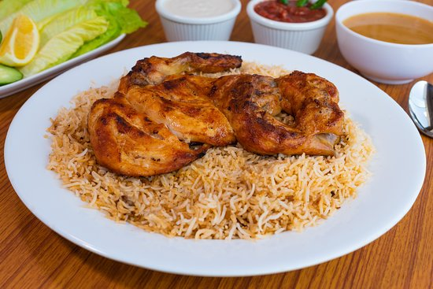

THE MAZBY CHICKEN
Chicken Mazbi (Stone Grilled Chicken with Aromatic Rice) is one of the most well liked of recent trending foods on earth. It is enjoyed by millions every day. It is easy, it is fast, it tastes delicious. Chicken Mazbi (Stone Grilled Chicken with Aromatic Rice) is something that I have loved my entire life. They’re nice and they look wonderful.
Mathbi is a traditional Arabian rice dish slow cooked with meat.Mathbi is grilled and not baked like mandhi.The rice is soft and flavourful, the chicken succulent and tender

Ingredients:-
- Whole chicken cut into 4 parts
- 1 tbsp Ground coriander
- 1 tbsp Ground cumin
- 2 tbsp Lemon juice
- 1/4 tsp Nutmeg
- 1 tsp Ground cardamom
- 1 tsp Ground cinnamon
- 1/2 tsp Ground cloves
- 1 tsp Ground peppercorns
- 6-8 Garlic cloves minced
- 1/2 tsp Turmeric
- 2 tbsp Olive oil
- 5-6 Saffron threads
- 3 Cinnamon sticks
- 4 Cardamom pods crushed
- 3-4 Lemon Wedges
- 7-8 Black peppercorns
Steps:-
- For the chicken:
- Heat oven to 400 F C (200C).
- Spatchcock the chicken by placing the chicken on a cutting board breast side down, and removing the backbone. Use kitchen shears or a very sharp knife to do this. I linked a great article on how to do this in the note section below. After the backbone is removed, cut the whole chicken in half. Cut off the tips of the chicken wings also, and save the backbones and wing tips for making stock.
- Use a meat hammer, and pound on the chicken a little to flatten it out. Make three sharp slits into each chicken half. Salt and pepper the chicken vigorously all over. Place skin side up on a roasting rack in the oven and place the chicken on the rack in the middle of the oven. If you don't have a roasting rack, you can place it directly on the oven rack.
- Place a roasting dish on the bottom rack of the oven and fill it with 1-2 cups of hot water, to create steam and to catch any chicken drippings.
- Cook for 45 minutes or until skin is golden brown and crispy and chicken is cooked through. If using a meat thermometer, it should read 160 F (71C). Let chicken rest for 10 minutes before cutting into it.
- For the rice:
- While chicken is in the oven, make the rice. Heat the olive oil in a medium saucepan over medium high heat and once hot, add the onion wedges, chicken backbone and wing tips. Stir around until onion browns, then add the water. Let it boil, then reduce heat to a simmer and let it simmer while the chicken cooks for 45 minutes. If you start this before the chicken, you can simmer for longer! You can add any aromatics (bay leaves, cinnamon stick, cloves), but we kept the recipe very straightforward.
- Strain the stock and discard the onion and bones, then add the soaked and drained basmati rice to the stock. Top up with additional water if needed, until water comes about 1 inch above the rice. Season with salt, bring rice to a boil, then once it boils cover with a tight fitting lid. Reduce heat to low and simmer for 20 minutes or until all the water has been absorbed.
- Remove the rice from the heat, let it stand for 10 minutes, then fluff with a fork. Place rice on serving platter and top with the cooked chicken.